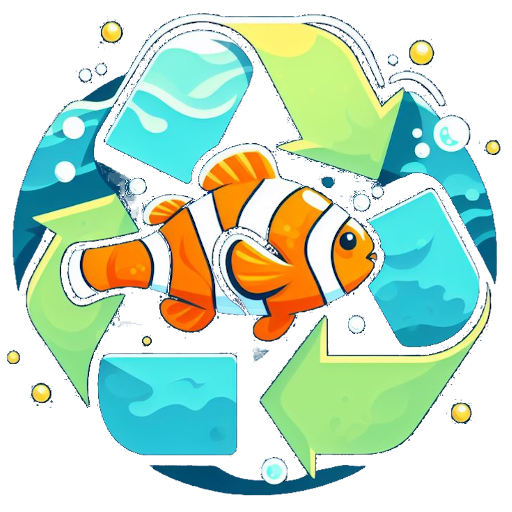

NECESIDAD
El problema de la ODS 14: Vida submarina radica en la creciente degradación de los ecosistemas marinos debido a la contaminación, la pesca excesiva, el cambio climático y la acidificación de los océanos. Esta situación amenaza la biodiversidad marina y pone en peligro la subsistencia de millones de seres vivos que habitan en los océanos. Por ello, hemos decidido desarrollar una aplicación que recompense a los usuarios por adoptar comportamientos sostenibles que ayuden a proteger los ecosistemas marinos, ofreciendo puntos canjeables por vales de descuento y otras ventajas, con el objetivo de fomentar acciones individuales que contribuyan a la conservación de la vida submarina.